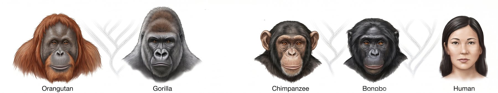
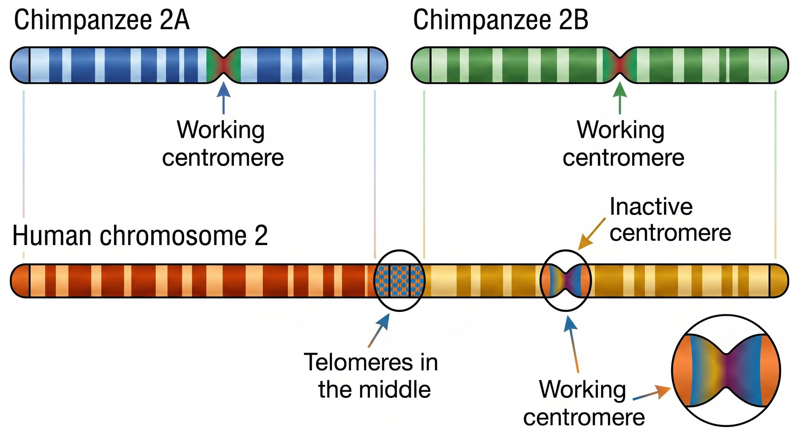

6.5 Environmental Change and Extinction
The last standard of the year, and the one that turns everything else outward. When conditions change, a species can grow, split, or end. This chapter is about judging the evidence for which of those is happening — including where humans are the change.
By the end of this chapter you should be able to
- Explain how a change in environmental conditions can increase a population, produce a new species, or drive one extinct.
- Analyse the effects of drought, flood, deforestation, fertiliser use and overfishing on populations.
- Evaluate given evidence — assess its validity, reliability, strengths and weaknesses.
- Identify additional evidence that would be needed, and say what it would have to show.
- Distinguish a causal claim from a correlational one.
The verb in this standard is evaluate, not explain. You are not being asked to describe what happened — you are being asked to judge whether the evidence offered is good enough to support the claim made from it. That is a different and harder skill, and it is what the modelling summative assesses.
Where we have got to
You now have the whole mechanism. Populations vary, that variation is inherited, the environment decides which variants do best, and over enough generations that produces adaptation and, eventually, new species.
Notice how much of that depends on one thing: the environment. It is the environment that decides which variant is the useful one. So the last question of the unit almost asks itself — what happens when the environment changes?
From Unit 3 you know that ecosystems can absorb some disturbance and stay recognisably the same, but that a large enough change can tip them into something different. You also met biodiversity, and what threatens it.
This chapter looks at the same problem through an evolutionary lens: not just whether an ecosystem changes, but whether the populations in it can adapt fast enough to survive the change.
There is one more difference in this chapter. Until now you have mostly been asked to explain. Here you are asked to judge — to look at evidence somebody else has gathered and decide whether it is good enough to support the claim they made from it. That is a harder skill, and it is the one this unit finishes on.
Three possible outcomes
The standard names three things a change in conditions can produce. They are not alternatives that happen to different kinds of organism — they are three outcomes of the same process, and which one you get depends on the variation a population already has and on how fast the change arrives.
| Outcome | When it happens | Example |
|---|---|---|
| Some species increase | The change suits existing variation, or removes a competitor or predator | Nitrogen fertiliser running into a lake causes an algal bloom |
| New species emerge | The change divides a population or creates new niches, and gene flow stops | A river changing course; a new food source becoming available |
| Species go extinct | The change is too fast or too severe for existing variation to cope | Habitat cleared faster than any population can adapt |
The deciding factor is almost always rate. Adaptation depends on selection acting across generations on variation that already exists. A slow change gives a population many generations to shift; a fast one does not. This is why an organism with a short generation time — an insect, a bacterium — copes with change that eliminates a slow-breeding large mammal, and why the speed of human-caused change matters as much as its size.
That claim about rate is easy to state and hard to feel. The model below lets you test it directly: the best-suited trait value creeps upward, selection drags the population after it, and the population's numbers depend on how far behind it falls.
Can the population keep up?
InteractiveChange one thing at a time and record what happens.
- Set the speed of change to 0.03 and run it. Does the population survive? How large a lag does it settle at?
- Reset and try 0.08, then 0.10. Find the fastest change this population can survive.
- Now put the speed back to a value that killed it, and raise variation to its maximum. Does it survive now? Explain why variation is what decides this.
- Watch the size band closely in a run that ends in extinction. Numbers fall before the population dies. What does that shrinking population do to the variation available — and why does that make things worse?
Specific pressures
| Change | Effect on populations |
|---|---|
| Drought | Removes water and shifts which food is available; selects strongly on feeding and water-conservation traits — as with the Galápagos finches in 6.3 |
| Flood | Kills largely regardless of fitness, so acts as a bottleneck; can also isolate populations and begin speciation |
| Deforestation | Removes and fragments habitat. Fragmentation splits one large population into small isolated ones, where drift dominates and inbreeding rises |
| Fertiliser use | Nutrient runoff drives algal blooms; when the algae die, decomposers strip oxygen from the water and fish die. Some species increase sharply, others are eliminated |
| Overfishing | Reduces numbers and selects on the traits fishers target — sustained pressure on large fish selects for earlier maturation at smaller size |
Overfishing is worth noticing because it makes the same point as the tuskless elephants: humans are a selection pressure whether or not we intend to be. Taking the largest fish year after year is artificial selection carried out by accident.
Case study — the Pacific robins of Norfolk Island
This case study is the unit's best example of why evidence evaluation matters, because a real conservation decision hangs on it.
A population of robins on Norfolk Island is declining, from rats preying on them and from clearing of the forest they live in. Scientists must decide whether they are a distinct species — Norfolk Island Robins — or members of an existing species. If distinct, the group will act to protect them. If not, they will not be protected.
Scarlet Robins, Red-capped Robins and Pacific Robins are all agreed to be separate species. The question is where the Norfolk Island birds sit.
To find out, researchers compared one gene — ND2 — in the Norfolk Island birds against the same gene in each of the three known species. The results were:
| Species | Genetic similarity to the Norfolk Island robins (ND2 gene) |
|---|---|
| Red-capped Robin | 98.2% |
| Pacific Robin | 96.7% |
| Scarlet Robin | 88.7% |
Wing length was also measured across the four populations.
Reading the genetic data
Higher similarity means a more recent common ancestor, so on this evidence the Norfolk Island birds are closest to the Red-capped Robin and most distant from the Scarlet Robin.
But notice what the data does not settle. All three figures are high — even 88.7% is a lot of shared sequence. There is no threshold percentage above which two populations are the same species and below which they are different. Species boundaries are not defined by a number, so "98.2% similar, therefore the same species" is not a valid inference. The genetic data tells you about relatedness; the species question needs more.
What additional evidence would help
The standard explicitly asks you to identify evidence that was not provided. For this case:
- Can they interbreed, and are the offspring fertile? This is the direct test the species definition calls for, and it is missing entirely.
- Do they attempt to breed when they meet? Behavioural barriers — differences in song or courtship — can separate species that are physically capable of interbreeding.
- Breeding timing and habitat. Temporal or habitat barriers would reduce gene flow even without geographic separation.
- More than one gene. ND2 is a single gene and may not reflect the whole genome. Several independent genes would be far stronger.
- Sample size and variation within each population. A difference between populations means little if the variation inside each is just as large.
- How long they have been isolated. Longer isolation makes accumulated reproductive barriers more likely.
Being able to say what is missing is a large part of this standard. A strong answer states the claim, uses the given data accurately, identifies the specific limitation of that data, and names what further evidence would resolve it — and says what that evidence would have to show to support each conclusion.
An uncomfortable question worth sitting with: the birds are declining now, and gathering breeding data takes years. Should protection wait for certainty? This is a real feature of applied science — decisions often have to be made on incomplete evidence, and saying so explicitly is part of evaluating it honestly.
Extinction
Extinction is the normal end of a species — over 99% of all species that have ever existed are gone. What varies is the rate.
Background extinction is the slow, continuous loss of species as conditions shift and competitors appear. A mass extinction is a sharp episode in which a large proportion of all species disappear in a geologically brief period. There have been five, and each is associated with rapid environmental change — often large shifts in atmospheric composition and climate.
Mass extinctions are followed by adaptive radiation. Emptied niches are filled by the survivors, which diversify rapidly into them. Mammals were small and marginal for over 100 million years and radiated only after the extinction that ended the non-avian dinosaurs. Extinction and the origin of new species are two halves of one process.
Natural and anthropogenic causes
| Natural | Anthropogenic |
|---|---|
| Asteroid impact | Habitat destruction and fragmentation |
| Volcanic activity altering the atmosphere | Climate change from greenhouse gas emissions |
| Long-term climate shifts and sea level change | Overexploitation — hunting, overfishing |
| Disease | Introduced species and pollution |
The distinction matters less than the rate. Current extinction rates are estimated at tens to hundreds of times the background rate. The problem is not that species are being lost — that has always happened — but that they are being lost far faster than adaptation or speciation can replace them.
This connects back to the beginning of the unit. A population survives change by having variation the environment can select from. Habitat fragmentation reduces populations to small isolated groups, where drift dominates and variation is lost — so fragmentation both threatens species directly and removes the raw material they would need to adapt.
Human evolution
The unit ends by turning the evidence on ourselves. Every line of evidence from 6.1 applies to humans exactly as it does to any other species, and one piece of it is unusually decisive.
Start by counting chromosomes across the great apes.
| Species | Chromosomes | Pairs |
|---|---|---|
| Orangutan | 48 | 24 |
| Gorilla | 48 | 24 |
| Chimpanzee | 48 | 24 |
| Bonobo | 48 | 24 |
| Human | 46 | 23 |
Look at how the counts fall. Four great apes share the same number, and only one does not. Orangutans split off from our line long before gorillas did, and gorillas long before chimpanzees and bonobos. For 24 pairs to appear in all of those branches, the shared ancestor almost certainly had 24 pairs too. Humans are the exception, and the exception is the thing that needs explaining.

That missing pair looks like a problem for common ancestry. If we share an ancestor with chimpanzees, and that ancestor had 24 pairs, where did a pair go?
Two possibilities: a pair was lost, or two pairs fused into one. Losing an entire chromosome pair would remove thousands of genes and is not survivable — so if common ancestry is true, there should be a human chromosome that looks like two ape chromosomes joined end to end.

Human chromosome 2 is exactly that. Its banding pattern matches two separate chimpanzee chromosomes laid end to end. More tellingly, it carries the molecular signature of a fusion: telomere sequences — the caps that normally sit only at chromosome ends — appear in the middle, where the two ancient ends joined, and there is a second, inactive centromere where one of the originals used to be.
This is a prediction that could have failed. Common ancestry required a fused chromosome with internal telomeres and a remnant centromere in a specific place. Researchers looked, and found it. An explanation that survives a test it could have failed is far stronger than one that simply fits what we already knew — which is the same argument that made the five converging lines of evidence in 6.1 so powerful.
Pulling the unit together
Read back through what you have built, in order:
- 6.1 — five independent kinds of evidence show that species share ancestors.
- 6.2 — natural selection explains how a population changes, from three ordinary facts.
- 6.3 — that change is measurable, in real data, in living populations.
- 6.4 — the same process produces adaptation, and eventually new species.
- 6.5 — when conditions change, populations grow, split or disappear.
Each chapter answered a question the one before it raised. That is not a coincidence of how the unit was written — it is how the science was actually built, over about 150 years, with each generation of biologists asking what the previous one had left unexplained.
If you take one idea from this unit, take this. Evolution is not a special force acting on life. It is what must happen to any group of things that make imperfect copies of themselves in a world with limited room. Nothing has to intend it. Nothing has to direct it. Given variation, inheritance and a shortage of resources, populations change — and given enough time, they change a great deal.
Go back to the camel from the very first lesson, and to the sentence you wrote about how it came to fit its habitat. Read it again now.
Would you still write it the same way? If not, what would you change — and which chapter changed your mind?
Check your understanding
Two parts. The quick check marks itself and points you back to anything shaky. The written questions after it are the harder practice, because explaining in your own words is what the summatives ask for.
Quick check
Two forests each lose 60% of their area — one over 5,000 years, one over 20. Why do the outcomes differ?
Selection acts on existing variation across generations. Thousands of generations allow a population to shift; a handful do not. This is why the rate of human-caused change matters as much as its size.
A beetle and a large grazing mammal share a habitat that warms over fifty years. The beetle population shifts and persists; the mammal population does not. What best explains the difference?
Generation time decides how much evolution fits into a given stretch of years. Short-lived species can track a change that a slow-breeding one only lags behind — which is why rapid change falls hardest on large animals, and why insects and bacteria so often survive what eliminates them.
The Norfolk Island robins are 98.2% genetically similar to Red-capped Robins. Does that make them the same species?
The genetic data tells you about relatedness. The species question needs evidence about whether they interbreed to produce fertile offspring, which was never provided. Saying what evidence is missing is a large part of this standard.
Wing length was also measured, and the Norfolk Island birds differ from the Pacific Robins. A student says this settles them as a separate species. What is the main limitation of that reasoning?
Physical differences between populations are common and often reflect nothing more than local conditions. The species definition turns on reproduction, so wing length runs into the same wall as the ND2 figures — it shows the populations differ, not that gene flow between them has stopped.
What typically follows a mass extinction?
Adaptive radiation. Mammals were small and marginal for over 100 million years and radiated only after the extinction that ended the non-avian dinosaurs. Extinction and the origin of new species are two halves of one process.
Mammals existed for over 100 million years while remaining small and marginal, then diversified rapidly after the extinction that ended the non-avian dinosaurs. What best explains the timing?
Radiation is a question of opportunity rather than of new raw material. The variation was already there; what changed was that selection now favoured lineages moving into roles nothing else held. This is why a mass extinction is followed by a burst of new species rather than a long empty gap.
Why is human chromosome 2 strong evidence rather than an interesting coincidence?
The hypothesis required a fused chromosome with telomere sequences stranded in the middle and a second, dead centromere. Researchers looked and found exactly that. A test the idea could have failed is worth far more than one it could not.
Which result, had it come out that way, would have counted against common ancestry with the other great apes?
The fusion account is worth something precisely because it says in advance what the inside of the chromosome should look like — old ends stranded in the middle, and the remains of a centromere no longer in use. An ordinary-looking chromosome would have left the missing pair unexplained. Evidence counts most when the opposite result was genuinely possible.
A study finds a beetle population declined in the same decade a nearby wetland was drained, and concludes the draining caused it. What is the weakness?
Something else changing in the same decade — a pesticide, a disease, a run of hot summers — would produce the same pattern. A control site, a mechanism linking beetle to wetland, or a dose-response relationship would all strengthen it.
A lake's fish catch has fallen over ten years, and fertiliser use on the surrounding farms rose over the same period. Which addition would do most to turn this correlation into a causal claim?
A causal claim gets its strength from the steps in between. Nitrate rising, then algae blooming, then oxygen falling, then fish dying — in that order — connects the two ends of the correlation with a mechanism that could have failed to appear. Piling up more cases where both things rise together only restates the pattern you started with.
Explain it yourself
Write your answer before opening the response. Comparing what you wrote with a full answer is where most of the learning happens.
A student concludes: "The Norfolk Island robins are 98.2% genetically similar to Red-capped Robins, so they are the same species and should not be protected." Evaluate this reasoning.
The evidence is used accurately but the inference does not follow.
No threshold exists. There is no percentage similarity above which two populations are the same species. Species are defined by whether they interbreed to produce fertile offspring, not by a similarity score, so 98.2% cannot by itself settle the question.
One gene is a narrow basis. ND2 is a single gene and may not represent the whole genome. Several independent genes would be needed.
The relevant evidence is missing. Nothing is given about whether the populations can or do interbreed, whether hybrids are fertile, or whether behavioural, temporal or habitat barriers separate them.
What the data does support: the Norfolk Island birds share a more recent common ancestor with Red-capped Robins than with the other two species. That is a claim about relatedness, not about species status — and the student has treated a correlation between similarity and relatedness as though it settled a different question entirely.
Two forests both lose 60% of their area. In one this happens over 5,000 years as the climate dries; in the other over 20 years through clearing. Why would you expect very different outcomes for the species living there?
Because adaptation needs generations, and the two changes allow very different numbers of them.
Over 5,000 years, populations experience thousands of generations. Selection can act on existing variation — favouring drought tolerance, different feeding, dispersal to remaining habitat — and populations shift gradually. Isolated fragments may even diverge into new species.
Over 20 years, a long-lived species may pass through only a handful of generations. There is no time for allele frequencies to shift meaningfully, so survival depends entirely on whether individuals already happen to cope. Populations crash, and fragmentation leaves small isolated groups where drift dominates and variation is lost.
Same total habitat lost, very different results — which is why the rate of human-caused change is the central concern, not just its extent.
Why is human chromosome 2 considered strong evidence for common ancestry with other apes, rather than just an interesting coincidence?
Because it was a risky prediction that could have come out otherwise.
Humans have 23 chromosome pairs and other great apes have 24. Common ancestry requires an explanation, and losing a whole pair is not survivable — so the hypothesis predicted a fusion. It further predicted specific molecular evidence: telomere sequences, which normally occur only at chromosome ends, sitting in the middle of the fused chromosome, and the remains of a second centromere.
All of that was found on human chromosome 2, whose banding also matches two chimpanzee chromosomes end to end. Had human chromosomes shown no fusion signature, common ancestry would have had a serious problem.
The strength lies in the test being one the hypothesis could have failed. A coincidence is something noticed afterwards; this was specified in advance and then confirmed.
A study reports that a beetle population declined sharply in the same decade a nearby wetland was drained, and concludes the draining caused the decline. What is the weakness, and what evidence would strengthen it?
The weakness is that this is a correlation presented as a cause. Two things happened in the same period, which is consistent with the draining causing the decline but does not establish it. Something else changing at the same time — a pesticide, a new predator, a disease, a run of hot summers — would produce the same pattern.
Evidence that would strengthen the causal claim:
- A control — a comparable beetle population near a wetland that was not drained. If it stayed stable over the same decade, other region-wide causes are largely ruled out.
- A mechanism — evidence that the beetle depends on the wetland for a specific life stage, so there is a reason draining would harm it.
- A dose-response relationship — sites drained more heavily showing steeper declines.
- Data from before the decade, to establish that the population was previously stable rather than already falling.
- Measurement of other candidate causes, showing they did not change over the same period.